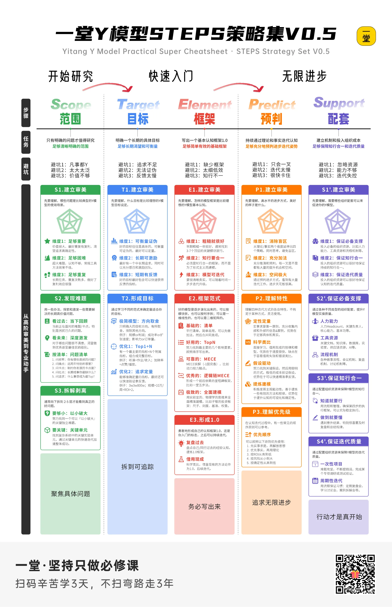

web3-learn 教程 · 五步法 · STEP 05
STEP 05 · 组织配套
让进步可持续
方法论再精妙，没有配套就是空谈。这一步对应五项：知识库、记录设备、复盘会、专家访谈、论文资源。按下表配齐，进步就从"靠自觉"变成"靠系统"。
五件套
每件配套都解决一个具体问题，缺哪件、哪件的故障就会接管 12 周。
知识库
一个仓库同时装代码与笔记，避免"知识散落各处、三个月后找不回来"。
docs/放架构决策与踩坑记录- ADR 记录每个"为什么这么设计"
- 每周更新 README 的进度小节
记录设备
把"我大概会了"变成可回看的证据。没有记录的进步，等于没发生。
git log当第一手记录，别靠记忆- 每周 3 分钟口述录音，对比语速与卡顿
- 架构图每周拍照存档，看演化轨迹
复盘会
每周固定 30 分钟，只回答四个问题。不写代码也能开。
- 本周哪个假设被证伪了？
- 哪个环节卡了最久，卡在知识还是体力？
- 下周只改一件事，是什么？
- 哪条手感信号比上周更明显？
专家访谈
12 周内至少约 3 位在岗的 Go / Web3 后端工程师，问具体问题，不要泛泛请教。
- 你们线上真出过哪类事故？
- 热钱包怎么管？私钥放哪？
- 新人最容易在哪个坑里栽跟头？
论文与资源
只读一手资料。二手博客可以帮你入门，但面试深挖时会露怯。
- EIP-1559 / EIP-4337 原文
- go-ethereum 与 Foundry 官方文档
- Uniswap V2 白皮书 + 源码
- OWASP 智能合约 Top 10
一句话保险
配套不是为了完备，是为了不靠意志力。
计划失败绝大多数不是因为方法不对，而是某一周断了记录、某次故障没人帮你看。这五项配套，本质上是在给"持续进步"上保险。
验收清单
- 知识库（仓库 / ADR / 周更 README）已建
- 记录设备（git log / 录音 / 截图）已就位
- 复盘会已经定下每周固定 30 分钟
- 至少已约 1 位在岗 Go / Web3 后端专家
- EIP-1559 / go-ethereum / Foundry 三份一手资料已下载到本地
